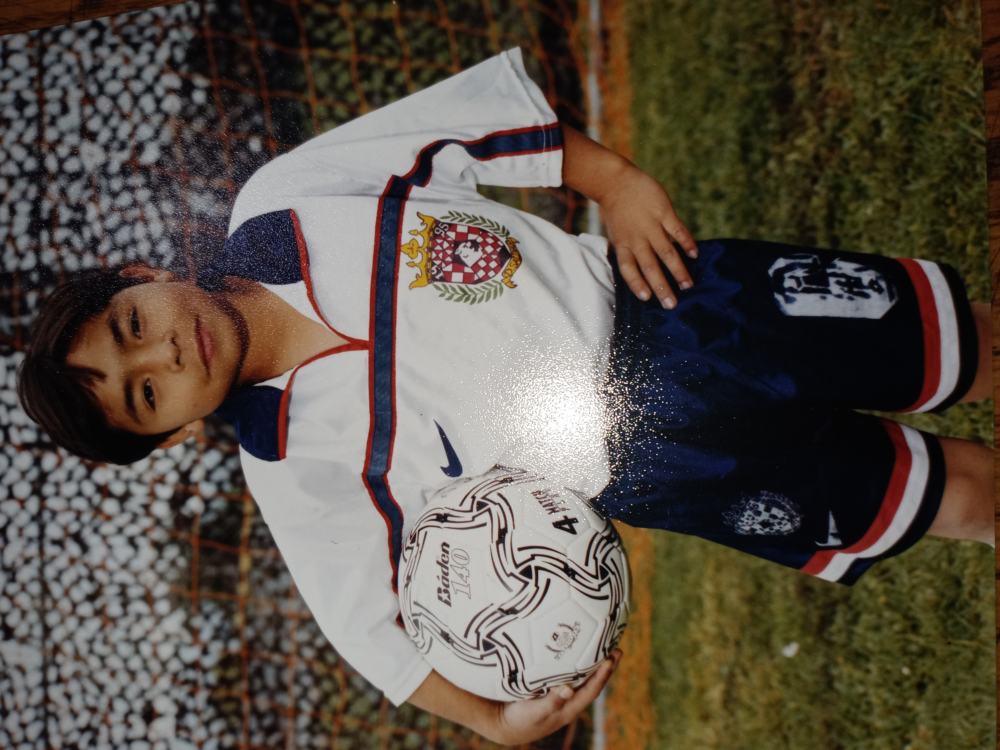

My Life As A Soccer Player
I'm Gerardo Tapia Vera, and I'm born and raised on the soccer fields of Salinas, California. I'm 30 years old now, and I'm a high school graduate from Alisal High School
and a university graduate from the University of San Francisco. I earned my high school diploma in June 2010, and I earned my Bachelor's of Arts degree in December 2014. I
played varsity soccer all 4 years at Alisal, and I became a starter my sophemore year. I became captain my Junior year. We won the league all 4 years I was there including
a CCS championship my senior year. I played some time for the varsity team at the University of San Francisco, but I never became a starter on the team. I earned a 3.7
G.P.A. in high school, and my favorite subject was Math. I earned a 2.8 G.P.A. at the University of San Francisco, and my favorite course was Human Physiology. I've worked
various jobs, but I now solely dedicate my time to learning programming languages and reading non-fiction books. I say I work as a Freelance Front End Web Designer and
Python programmer, but I've yet to do any coding for a client. I hope this website and what I do make an impact on the young lives that are born and raised here in Salinas,
especially in East Salinas. Also, I do desire that my company makes an impact all over the world by allowing children to understand that sports and school are very important
responsibilities in life that lead to the wellbeing and success of any individual. Please feel free to contact me at my cellphone number 8313561442 or my email
gerardov66@gmail.com, thank you.
1 / 8

First Year Playing With Deportivo Salinas
2 / 8

Freshmen Year Cross
3 / 8
Sophemore Year Photo
4 / 8
Sophemore Year Dribble
5 / 8

Commanding The Next Pass
6 / 8

Junior Year Goal Celebration
7 / 8
Senior Year Photo At Alisal
8 / 8
Passing The Ball At U.S.F.